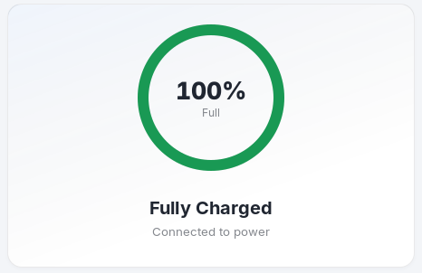
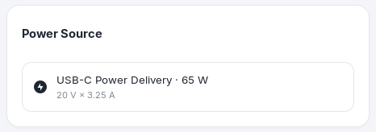
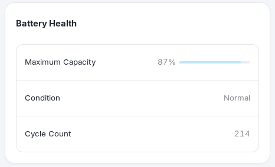
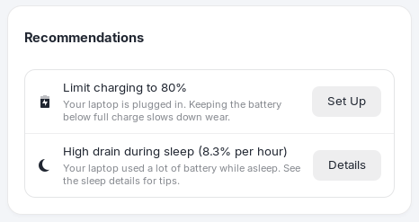

Overview
Your battery, charger and recommendations at a glance.
Overview is the page the app opens on. It answers "how is my battery doing right now?" without making you hunt for it.

The charge ring

The percentage is in the middle. The headline underneath is one of:
| Headline | Meaning |
|---|---|
| Charging | The charger is connected and the battery is filling up. Below it you see the time left until full (or until your limit), for example "1 h 10 min until 80%", or the charging power in watts. |
| On Battery | The laptop is running from the battery. The line below estimates the time remaining at the current usage; while it is still measuring it says "Estimating time remaining…". |
| Plugged In, Not Charging / Charging On Hold | The charger is connected but charging is held on purpose, usually because the charge limit has been reached. The line below says "Charge limit of 80% protects your battery". |
| Fully Charged | The battery is at 100% and the charger is connected. |
| Charging to 100% | A one-time or scheduled full charge is running. Your limit comes back automatically. |
The time estimates are based on how fast the battery has been charging or draining recently, so they settle after a minute or two.
Power source

When a charger is connected, this card names it (AC adapter or USB-C Power Delivery) and shows its rating in watts, with volts and amps when the laptop reports them. Chargers that do not report a rating say "This charger doesn't report its power rating". The card also appears on battery and shows Last Seen Plugged In.
Three more groups can show up on this page depending on the situation:
- Since Last Charge (on battery): how long ago you unplugged, how much of the battery you used, and the average draw in watts.
- Other Devices: the battery level of connected wireless devices such as a mouse or a keyboard, when Linux reports it.
- Two batteries: laptops with two batteries are supported.
Battery health summary

Maximum capacity compared with when the battery was new, its condition, and its cycle count. Open the Health page for explanations, the trend and calibration.
Recommendations

Recommendations are small, practical suggestions based on the current state. They only appear while they are true, and when there is nothing to suggest the card says Everything looks good.
| Recommendation | When it appears | Button |
|---|---|---|
| Battery capacity is down to N% | Maximum capacity is below 80%. Calibrating can correct a wrong reading; if it stays low, consider a replacement. | Calibrate opens the calibration on the Health page. |
| Limit charging to 80% | The laptop is plugged in and no charge limit is set, and your battery supports one. | Set Up opens the Charging page. |
| Draining while plugged in | The charger cannot keep up with the laptop's power use. Use a more powerful charger. | None |
| Low-power charger | The charger is under 45 W, so charging can be slow, especially while you work. | None |
| High drain during sleep | The laptop used a lot of battery while asleep (more than 2% per hour). | Details opens the sleep list on the Usage page. |
| An app is using significant energy | An app is keeping the CPU busy on battery. Quitting apps you are not using makes the battery last longer. | Details opens the app on the Usage page. |
| Performance mode is on | You are on battery in Performance mode, which drains faster. Balanced is usually enough. | Use Balanced |
| Screen brightness is at N% | On battery with the brightness at 80% or more. The screen is usually the biggest power user. | Lower to 50% |
| Keyboard backlight is on | On battery with the keyboard backlight on. | Turn Off |
| Bluetooth is on but nothing is connected | On battery with Bluetooth enabled and no device connected. | Turn Off |
| Battery is low | The battery is low and not charging. Regularly running it flat wears it faster. | None |